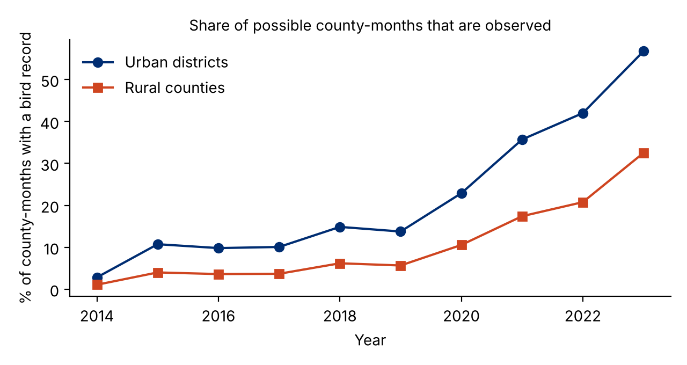
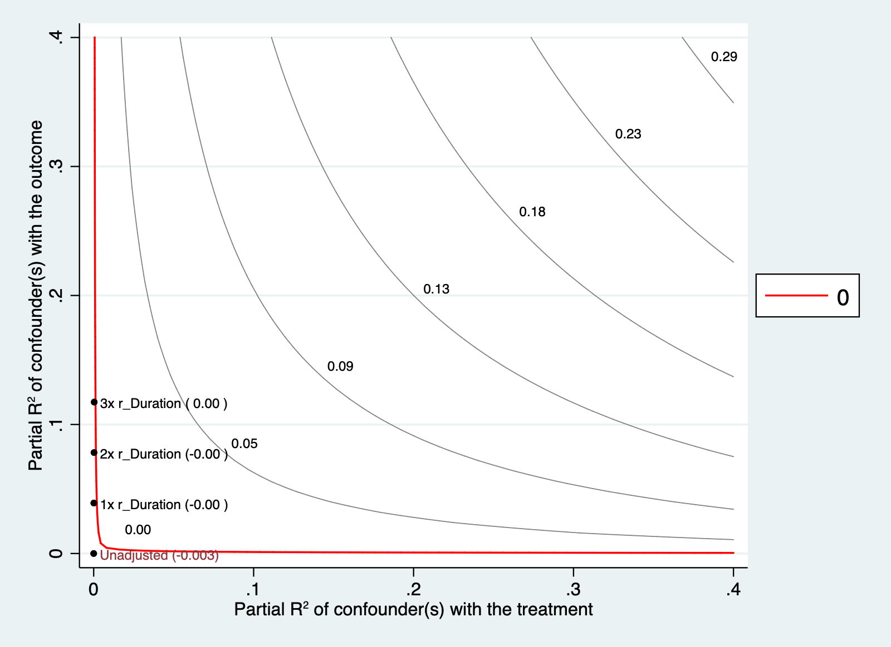
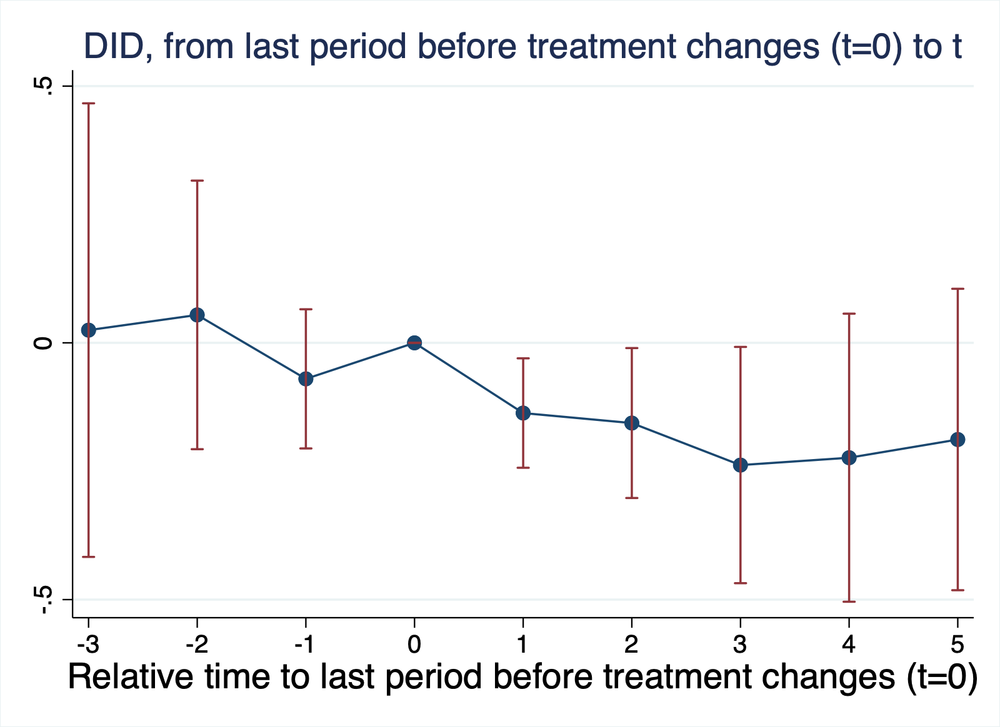

The paper and its data
- Unit: county-month, 2014–2023.
- Outcome: Shannon diversity of birds recorded on China Birdreport, a citizen-science platform SM p. 2. Records are opportunistic, not standardized surveys.
- Treatment (PSI): solar-promotion documents scored by how binding they are, summed per county-year (0 to 15.5). Missing for 724 of 2,501 counties and set to 0.
- Controls: temperature, wind, population density, carbon emissions, four land-use shares, and Duration, the log of birding hours per birdwatcher Table S1, SM p. 24.
Sample flow
County-months with bird records, by year
The panel is very unbalanced. The median county is observed in 11 of 120 months, and records grow 24-fold from 2014 to 2023. Observed rows are about 14% of all possible county-months.
1. The main estimate
It reproduces exactly. It does not survive a fair comparison.
| Specification | PSI effect | SE | p | Stata log |
|---|---|---|---|---|
| Paper: county + year-month fixed effects | −0.0125 | 0.0037 | 0.001 | open |
| Urban × year-month fixed effects | −0.0027 | 0.0037 | 0.47 | open |
| Only counties with real PSI data | −0.0027 | 0.0038 | 0.49 | open |
| Province × year-month fixed effects | −0.0146 | 0.0047 | 0.002 | in the tool |
| Matching, with the matching weights applied | −0.0051 to −0.0054 | 0.004–0.005 | n.s. | open |
Who has PSI filled in as 0?
- PSI is missing for 724 counties and set to 0. They are 694 of 847 urban districts but only 9 of 1,497 rural counties.
- So 83.1% of urban county-months have filled-in PSI, against 1.2% of rural ones. The regression mostly compares rural counties with urban districts.
- Birdwatching grew much faster in cities. Separate urban and rural monthly shocks, or dropping the filled-in zeros, remove about 80% of the effect.
2. Is the outcome measuring birds or birdwatching?
Shannon rises with effort. If high-PSI places are observed less, they look less diverse with the same birds.
| Effect of +1 PSI point on | Paper design | Urban × month FE | Real-PSI only | Stata log |
|---|---|---|---|---|
| ln(birdwatcher records) | −0.0410*** | −0.0135** | −0.0078 | open |
| ln(1 + total birding hours) | −0.0567*** | −0.0196*** | −0.0113 | open |
| Chance a county-month is observed at all | −0.0055*** | +0.0001 | +0.0002 | open |
| Shannon, holding ln(records) fixed | +0.0032 (p = 0.31) | open |

- In the paper's design PSI predicts less effort and fewer observed months. In fair comparisons both links vanish.
- “Number of birdwatchers” in the authors' file is a count of submitted records, so it measures checklists, not people.
- The paper's own effort check keeps 17–58% of the sample, not the 80–97% its description implies Table S14, SM p. 44.
- Holding records fixed is a diagnostic, not a fix: if birds leave, birdwatchers may follow.
3. Solar-plant area as the treatment
PSI measures documents; birds respond to land. So we also used the land area of centralized solar plants.
| Specification (outcome: Shannon unless stated) | Effect of +1 km² | p | Stata log |
|---|---|---|---|
| Paper (Table S12, column 1) | −0.0387 | 0.001 | open |
| Urban × year-month FE / province × year-month FE | −0.0298 / −0.0251 | 0.007 / 0.036 | open |
| Holding ln(birdwatcher records) fixed | −0.0055 | 0.62 | open |
| Outcome: ln(birdwatcher records) | −0.0843 | <0.001 | open |
| dCDH, all counties | −0.106 (SE 0.068) | n.s. | open |

- For the paper: Area stays negative in the comparison-group checks where PSI does not.
- Against: more area goes with 8.4% fewer records per km². Holding records fixed removes 85% of the effect. dCDH finds nothing significant.
- Data: licensed plants from the National Energy Administration Table S2, SM p. 26. Area is missing for 1,184 counties and set to 0; only 473 of them also lack PSI. The file has 11,699 true zeros.
- The paper's positive PSI–Area correlation r = 0.041, SM p. 12 is across counties. Within a county over time the relation is negative.
4. Sensitivity to a hidden confounder
| Paper design | Urban × month FE | |
|---|---|---|
| Estimate | −0.0125 | −0.0027 |
| Confounder strength that brings it to zero | 2.16% | 0.44% |
| Strength that makes it insignificant | 1.24% | already n.s. |
| Estimate if a confounder is 3× / 4× / 5× Duration | −0.0038 / −0.0009 / +0.0020 | +0.0010 / +0.0023 / +0.0035 |


- An omitted variable explaining just over 2% of the leftover variation in both PSI and Shannon would wipe out the effect.
- Duration, the paper's effort control, explains 4% of Shannon's leftover variation. A confounder three times as strong makes the estimate insignificant.
- The obvious candidate is the part of birding effort that hours per birdwatcher does not capture.
5. The instrumental variable
Instrument: ln(long-run sunshine) ÷ city climate-policy uncertainty SM p. 8. The IV estimate is ten times the main estimate.
| Clustering | Instrument F | Benchmark 23.1 | 95% Anderson–Rubin set | Stata log |
|---|---|---|---|---|
| County (paper) | 30.2 | passes | [−0.217, −0.069] | open |
| City | 10.8 | fails | [−0.295, −0.038] | open |
| Province | 2.8 | fails | (−∞, −0.030] ∪ [0.590, ∞) | open |

- Weakness is not the problem. Anderson–Rubin sets stay valid with weak instruments and still exclude zero.
- Exclusion is. In the 724 counties with PSI fixed at 0 the instrument cannot move PSI, yet it lowers Shannon: −0.00214 (p = 0.048). Allowing for that gives an IV estimate of −0.042, not significant.
- The “F ≈ 8” in Table S10 is the joint F of all regressors. The instrument's own F there is 49.
- The sunshine variable's label in the data says 1994–2023, not the 1984–2013 stated in the paper.
6. Staggered difference-in-differences (binary adoption)
When treatment starts at different times, TWFE uses already-treated counties as controls. These estimators avoid that.
| Estimator | Main sample (real PSI) | Paper-style (missing PSI = never treated) | Stata log |
|---|---|---|---|
| TWFE, same binary treatment | +0.032 (0.041) | table | |
| Callaway & Sant'Anna (2021) | +0.057 (0.143) | −0.091 (0.120) | table |
| Borusyak, Jaravel & Spiess (2024) | +0.078 (0.069) | −0.087 (0.060); year before adoption −0.173 | open |
| Sun & Abraham (2021) | +0.024 (0.089) | open |
When counties first adopt a solar policy
- None finds harm in the main sample. Negative estimates appear only when filled-in urban counties act as controls, and then pre-trends fail.
- Limits: PSI becomes 0/1, and the 838 counties already treated in 2014 are dropped.
7. de Chaisemartin & D'Haultfœuille: PSI as a dose
dCDH compares each county whose PSI changes with counties at the same starting PSI that have not changed yet. Each run takes minutes, so results here are fixed.
| Specification | Effect per PSI point (SE) | Pre-trend test | Stata log |
|---|---|---|---|
| did_multiplegt_dyn (event study) | |||
| All counties | −0.055 (0.018)*** | passes (p = 0.74) | open |
| Within urban / within rural | −0.041 (0.019)** | passes | open |
| Real-PSI counties | −0.037 (0.019)** | passes | open |
| All counties, adjusted for the 9 controls | −0.041 (0.018)** | passes | open |
| Real-PSI, adjusted for controls | −0.025 (0.019) | passes | open |
| Within urban/rural, adjusted for controls | −0.029 (0.018) | passes | open |
| did_multiplegt_stat (weighted average slope) | |||
| All counties | −0.035 (0.016)** | passes | open |
| Real-PSI counties | −0.027 (0.013)** | passes | open |
| All counties, with the 9 controls | −0.024 (0.015) | passes | open |
| Outcome: ln(birdwatcher records) | |||
| dyn, all counties | −0.019 (0.010) | fails (p = 0.001) | open |

- For the paper: a negative effect with Shannon pre-trends passing. This is the most supportive result we have.
- Against: not significant with the paper's controls in the fair samples, and the effort pre-trend test fails.
- Why it differs from section 6: it measures the effect of more policy, using later increases in counties already treated in 2014. The binary estimators measure the effect of a first policy.
- Not run: the “no stayers” method (
did_had) needs all units untreated at first and one adoption date. Neither holds here.
Conclusion and limitations
- The reported effect depends on comparing rural counties with urban districts whose policy data are missing, on an outcome whose volume is related to the treatment, and on an instrument with a measurable direct effect.
- The most favourable modern estimator (dCDH) finds a negative effect, but it weakens with controls and its effort pre-trend test fails.
- The evidence is insufficient to conclude that the policy reduced bird diversity. It is also not evidence of no effect.
Limitations of this evaluation
- We rely on the authors' data files; how some were built could not be verified.
- “Holding birdwatchers fixed” is a diagnostic, not a solution.
- Stata/BE limits prevented three specifications: dCDH with
controls(), dCDH withcontinuous(), and sensitivity with explicit county dummies. Workarounds are documented; all three can run in Stata/MP or R.
What would settle it
- A test where effort is fixed by design, such as China BON-Birds fixed transects.
- dCDH with controls and the continuous option, with bounds for the effort pre-trends.
- Inverse-probability weighting for observed months, using the full county × month grid.